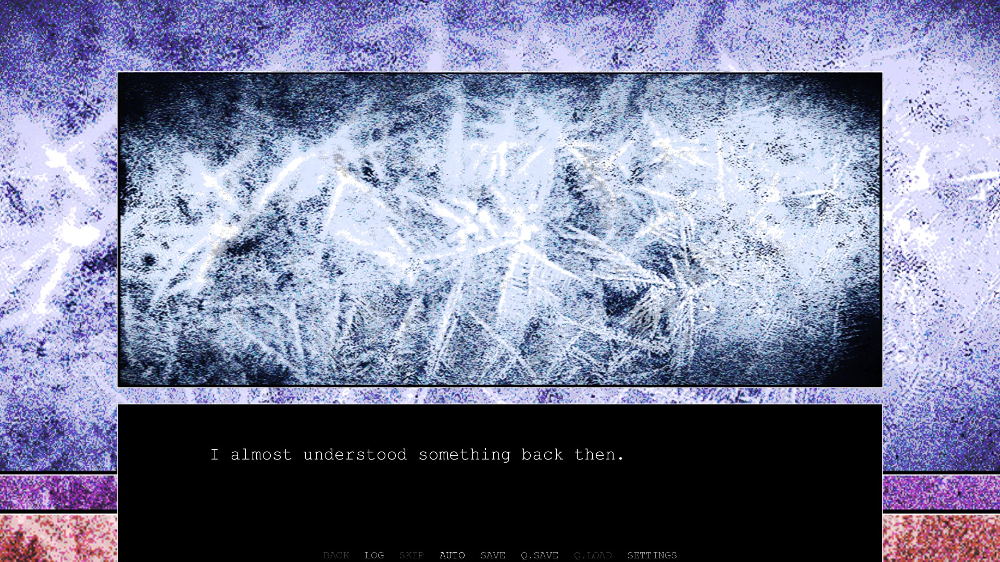
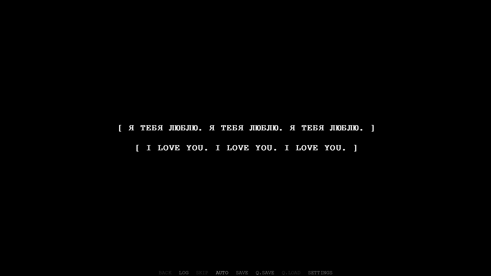
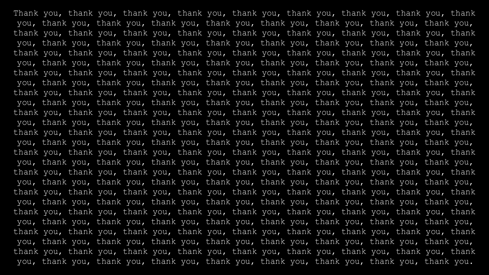
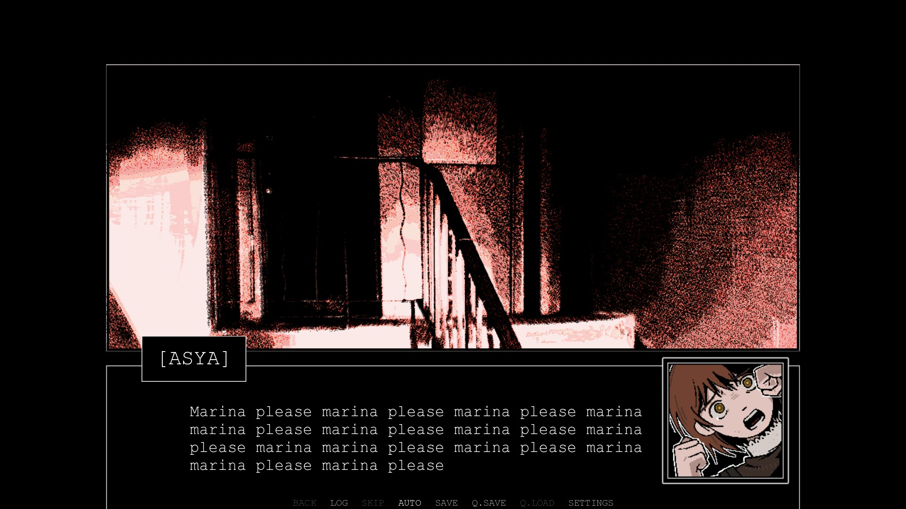

Loving You at the End of the World
This article contains specific details about a certain work. If you have never watched the work before, continuing to read may seriously compromise your viewing experience.
Review: Z.A.T.O // I Love the World and Everything In It
Cold wind attacks. I hug myself to keep warm. The place doesn’t seem to welcome me. Though the polar night ended several days ago, the temperature doesn’t go up even one or two degrees.
No one speaks welcome. Nothing speaks welcome. The whole place is eerily serene. Maybe she sees me as her intruder. Maybe she thinks I break her good dream. Maybe she feels awkward for a visitor who returns a long time after. However, as I enter the street, I know why. The truth is that she lost the spirit. What remains here is no more than a corpse. It reflects nothing.
The school building is eroded by the time and hazardous winds. But, like preparing for my visit, the corridor and that classroom still keep in shape.
I look through the window. The endless white covers the landscape. Pine trees stand silently, with pieces of snow sliding, occasionally, off the branches.
I stare. The needles seem to possess magic. I gaze at the trees. I gaze at pine needles. I gaze at the hints of white snow. I am enchanted. It’s too beautiful. It’s too bright. It’s too overwhelming that my eyes blur – it’s too much.

A bird flies past the window.
I am brought back into the reality. No, not that I am allowed to postpone myself writing. The radio wave is lingering in the air, murmuring overwhelming love, and I can feel it. I reach my hand into the frigid air. I feel a gentle current flowing between my fingers. I feel the warmth cast on my skin from the faint sun afar.
I receive the radio wave.
The intangible resonates with my arm, with my nerves within. I touch its repeated pattern. I sense its soft and engulfing emotion. It makes me want to give thanks in return.
But this is a story many years ago. Time destroys things thought to be solid and invincible. What remains is only the radio wave.
I am worried that the wave would eventually fade into the empty sky, so I try to tune in, I try to listen, I try to interpret, I try to convey. But it’s just too much to handle. What will that girl say or do if she were still there? The girl who confesses to the universe.
I don’t know. Maybe I can’t know. Maybe there’s no need to know. Everything that girl want to convey has already been contained in the signal. Right, Asya?
I leave the hustling wind and electromagnetic waves behind merging into the sky. The transmission is still ongoing with the repeated sentence.
I love you. I love you. I love you.

Vorkuta-5 was once a closed city. When I first got access to the city, it was covered in endless snow and eternal darkness. Above the concrete, the starlight was melting, distorting, detaching, and merging. How fascinating. But today, witnesses are empty blocks and abandoned Khrushchevkas. The absence of maintenance erodes vestiges of the living, but the shadows of nostalgia are released, haunting every visitor’s footstep.
When the correction was applied, it was the sun rising from beneath the horizon where the polar night once dominated. This is the incident widely known, I won’t repeat the files and news. Many people commented that it is a tragedy witnessing the city fails to sustain its existence at the dawn of the polar night. But I don’t think so. Maybe just like what the girl said, the city was a wound, which was supposed to be healed. It’s like a dream. It’s like the starlight. Vacillation with no fixed shape. Waiting to be forgotten.
If you forgot, it probably didn’t matter. If you forgot, it probably wasn’t real.
But it’s not for something to be forgotten. No. Of course it should not. If the world is a closed system, how can impact factors vanish with no hints remain? If the code was once been revealed, how can it evade from becoming part of the souls?
Are you on the same wavelength?
Denpa-kei (電波系, radio-wave type) is, in plain language, anything but plain language. Seeing one’s own body as an antenna. Receiving and sending signals. Hallucinations in mind. Psychological turbulence. Weird behaviors. Metaphor. Poesy. Chaotic. They are how denpa-kei works.
Honestly, denpa-kei pieces are always demonstrating strange things and speaking nonsense. It is because this genre is always a journey to one’s most direct psychological dynamic. It’s originating from a rumor that electromagnetic wave can affect and control human brains. When the concept entered the field of anime, it became a stage setting, in which characters are able to interact with the electromagnetic wave with their bodies, in return affecting their and others’ cognition. It sometimes horrifying and unsettling, sometimes bewildering, but sometimes lovely.
Obviously, denpa-kei is a niche genre. But Z.A.T.O. is somewhat more acceptable to most players. It’s more focused on the heroine’s stream of consciousness, which is kind of cute and funny. As destiny draws near, her “strange” mind instead becomes an anchor of the destructing world, a lifeline for the sanity, rather than, like in other games theming insanity and blood, pushing everything further toward the verge of collapse.
Commentors often argue that denpa-kei is too obscure to understand. However, it is us who should change the expectation. The novel is supposed to be perceived as a long poem – or a verse, in which the plot is a stage for poetic imageries.
In this case, the ambiguous description is expected to be a metaphor to be felt rather than explained. Follow the stream of the heart. Hear the flow of the emotions. And accept the confession of love as the sun returning to the frozen land.
Follow the stream of epizeuxis. Parallelism lends emphasis. Yet originally. Crazy repetition demonstrates vividly and impressively the character’s inside without additional pictures.


This kind of rhetoric device plays a better role than in traditional paper-borne novels. In traditional media, the text is given at once as a whole, and readers have total control over the current reading location. The oppressive repetition can be skipped easily. However, in visual novels there’s a difference. The visual display of the text streams is dynamic and controlled, in which readers are imposed on to endure the irresistible and devastating power.
Despite the erratic forms, denpa always blurs the boundary between the real and the hallucination. Humorously, this could be a true what-you-think-is-what-you-get. And as you can see, the game has utilized it and made an extraordinary performance.
A cold city
The high latitude endows Vorkuta-5 with bone-chilling coldness. At first, I was interested in this natural phenomenon, trying to hang out a bit and feeling the different city scape. But unfortunately, the temperature ended my idea. I quivered in the thick down jacket, rapidly crossed the street escaping from the wind, and rushed into the Zvezdochka café.
It looked that way whenever I walked past its huge glass windows, the whole interior basked in golden light. It makes me feel at ease. I love sitting by the window, watching the snow fall. A cup of coffee and a serving of kartoshka are a wonderful afternoon tea, if it can even be called “afternoon”. Warmth began to gather from the esophagus to the stomach.
I push away the cracking doors. The hanging anemic sun casts the lengthy shadow in the dusted hall. The window broke at some unknown time. Wind and snow encroach the ruined shelter.
Maybe the city encircled by the tundra is too hard to keep warm. The city is too small. The city is too weak. Its existence is maintained by the politics and administration. The most absurd, most unstable force. Human’s force. When the force withdraws, everything greets its end.
So does the café. It doesn’t possess the power against the Nature. The universe.
If Asya were still here, would she choose the Bird Milk Soufflé? It reminds me of her relationship. Marina.
The first time I’d heard about their friendship stories, I thought it was lovely. But when I realize the fact that Marina’s emotion had forever disappeared, I was seized by mixed feelings. She actually pretended to still possess emotions. She showed carefree. She was friendly to Asya. Unlike the false friends in our impressions, Marina never badmouthed Asya. From any perspective I can’t say that she was a hypocrite. She actually acted as good as it was real. Her pretense was perfect. But though it was perfect, is it true? Is it honest? What did she think when they were hanging out?
And Ira. Asya told me about her. If it weren’t for the coincidence, maybe she would always be overlooked. Ira said she loved Asya’s poem, but she still called her “weirdo” sometimes. Asya was craving for showing her the new poem. I don’t know if the mission was done. Maybe Ira actually didn’t care at all. Maybe Ira was moved, sincerely. Sadly, I can never get the answer. Never.
Just like what Vadim said, Asya had no idea about those two girls at all. She tried her best to grip the lines, but she was just passively involved into the event. Her friendships are wishful thinking. – Ack, and Vadim, that boy. Leave this gangsters’ leader alone.
Vorkuta-5 is a cold city. So did her people. There should be fire to ignite the passions. But flames are to be put out. No one wants to be burned. That’s why I respect Asya. That’s why I want to keep the signals.
[SIGNAL JAMMED: D]
Did you know that our Sun is a very unusual star?
To start with, it’s a yellow dwarf. Those constitute for just 7-10% of all stars in the universe. It’s an outlier even among those.
Most yellow dwarves are primarily covered with dark spots. The Sun isn’t.
The majority of its surface is bright – in fact, it has three times the number of light spots than it does dark spots.
Sure, its overall brightness index is nothing special. You could even call it underwhelming compared to other stars of its type.
But even so, it works harder than most to shine as bright as it can. And I find that really cute.
The more I thought about things like that and the more I learned, the more I realized how incredible everything is. I’m not just saying that to mean “amazing”. I mean “improbable”. You can’t deny the world is full of great coincidences. It’s to the point where I’ve begun to ask myself how much of it we can attribute to pure chance.
The universe was so kind as to give us both a star and a planet with the perfect conditions for sentient life.
Just the slightest fluctuation in the composition of our atmosphere, the size of the globe, or the distance between Earth and the Sun – and none of us, none of the beauty surrounding us, would exist.
These small pieces of ideas pops in my mind whenever I look up at the morning sky. They’re… just so cute. I love understanding the world in this way.
In this world where everything is Goldilocks-like, I firmly believe every being is created out of purity, for the universe’s sincerest wish to be observed, to be admired, and to be appreciated.
My idea might be too arrogant. Maybe I don’t have the right to judge the will of the universe. But how can I ignore the beautiful creations made from the most marvelous miracle?
“So you say there’s no evil in this world?”
Her voice brakes my stupor.
“No! – Uh, what I wanna say is, umm,” I fluster, trying to choose the right language, “there are things we perceive as painful in the moment, and there are really horrible, awful things happening every day… But I don’t think it’s right to call them evil. Evil’s intentional.”
“So?”
“Those things don’t come from bad intentions. Sadness, loneliness, misunderstanding, fear… but not evil. It’s an ancient Greek quote, it puts it like, umm…”
She stares at me, waiting for my explanation. Breeze ruffles her long hair. I see her eyes. As blue as the sea that exists in only television and my imagination. I look away.
“‘Evil is not a being. For if it were, it wouldn’t be totally evil. Evil has no place among being!’ – something like this!” Luckily I remembered the quote from a random book I read before.
“Okay. So Hitler’s not evil?”
“Eh… Eh???! Um. Uh… Th-that’s a rather extreme example… But… It’s not like he was born that way, was he? It wasn’t his natural quality, I don’t think…”
“So? The point still stands. He grew up and became evil as hell. Evil exists, it’s freaking everywhere. Just 'cause there’s a reason for it doesn’t make it better.”
“It’s… Please don’t say it like it’s… omnipresent.”
Confusion flashes through her eye. “I don’t really get it, but the world you imagine is not bad. Like everyone’s good deep down. Like nobody would ever hurt someone on purpose… It must be nice bein’ able to think that way.”
“Huh?” Hearing her words, I look up to her face. Something warm flows into my heart.
She says as she standing squarely in front of me, with eyes straight. “That’s a sweet world you’re living in.”
[SIGNAL JAMMED: D END]
As I am thinking, I bring myself to the research complex. The complex is completely abandoned. After the incident, the Soviet government seized the confidential files and devices in it and destroyed most of the infrastructure. Seems they tried to seal the gate, though it has rusted away.
Stepping into the gate, a sense of tension and fear creeps onto my spine. The hall is gloomy.
I was once invited to visit the complex for some secret research purposes. I can’t clearly remember what Kaplan told me about the research program. It’s about the study of the nature of the universe. They believe that the universe is built from algorithms and codes. Yeah, it is something called structural dynamics. The related records may still be kept somewhere, but I never get permission to get access. Every related thing just mystically vanishes.
I don’t know if I should feel exceedingly lucky that I haven’t been corrected. After the Dissolution, life became tough.
I majored in macroeconomics at the time. At the beginning, I felt excited that a confidential project intended to invite me. But it was until when I entered the complex, I found it was different from what I imagined. They were creating distortion with rough tech they learned from the codes. The distortion that stained with calculations and ambitions.
The complex was blasphemy.
But I met her. It was a brief encounter. Kaplan led me to their office where a detection was implementing.
At that time, Asya was about nine years old. She was brimming with… despair. My heart ached. Somewhere a bell rang. A bell I can just barely hear. Wires twined, spreading everywhere chaotically. Someone was talking to her in a friendly voice, but the content is aggressive and unsettling, as if they were interrogating a caught spy.
“What are you doing?” I questioned Kaplan, the researcher.
He answered in a monotonous voice. “We’ve detected a distortion she made. If her ability is confirmed, then our study in creating and inspecting codes and distortions will get a big progress.”
“But it looks kinda disturbing!”
“This is a part of the psychological test. The whole questionnaire is controlled by the protocol so it would be fine.” He explained. And, paused a while he added, “maybe this is your first job to do. She’s acting defensive to us. You can take care of her for us.”
I knew Lev had seen through me. I should say this might be the best thing I’d done there and then. In the end, my most tasks were babysitting. I never got a chance to study further how the structure runs, not to mention the experimental application to the economical operation. This is a luck for me. I didn’t involve into the stuff too much and evaded the correction.
Before Asya was allowed home, I watched her in the institute, I took her to the library, I brought her to Zvezdochka. I organized her meetings with parents. She had an imagined friend, named Tosya. A similar name to hers. Seemed she had no real friends. The little girl immersed herself into the books all day all night. Besides these, I knew little about her life, about her anomalies. Unfortunately, I was transferred to Moscow months later, where a more practical research center was built.
Years passed. One day I received a confidential letter. Sent from Vorkuta-5, inviting me to help develop a complex system model.
We encountered in the street. Asya Shubina was now a high schooler. Thanks to the God, she still remembered me. That one month was my last time to see her.
[SIGNAL JAMMED: E]
Imagine drawing a line. It doesn’t have to be perfectly straight. Let’s say you keep going on and on in one direction. You stare at the line you’ve drawn from up close and it looks like a mess. So much variety, the rises, the falls, the soft waves, the sharp edges…
And then you zoom out.
The further you go, the more insignificant those little fluctuations become. Once you rise way up high, your eyesight won’t distinguish them at all.
All you will see is a straight line.
A single, perfect stroke.

Now picture a line drawn across the whole entire universe. A truly endless line.
What kind of curve could possibly put a dent in it?
An infinite line could only be offset by an infinite curve.
Infinity! How can a human have the ability to deface you! Isn’t it silly to still yearn for it? To dream of altering something that’s already perfect? Everything in this world returns to absolute.
So that’s how you want to be. You want to erase all that remains of her. Every footprint she’s ever made, every word that she’s ever spoken.
But if you want me to feel sad, to feel panic, you are wrong.
I love you. I appreciate your complexity. I appreciate your marvels. But I’m surprised at how brash it is. In a most simple and direct way.
It’s cute.
I know you may cleanse all the distortion on planet Earth. You can erase everything and everyone else for good. That’s part of why my breath halts when I think of you. That’s part of why I love you.
But I have to deny you, just this once.
I know I’m a pitiful, worthless gnat. I know I don’t have the ability to create even a fraction of the fluctuation on the straight line of the universe. I know that nothing that I do will ever matter. But this time, I will defend my memory. I won’t let it fade. For myself. For my best friend –
Ira…
Hey, what’s that look? I’m being arrogant, I know. So if you wish, please swat me like a fly. I’ll understand. In any way you like… at any place, at any moment… erase me from this world. Cleanse your body of me. Cleanse yourself of this filth. Heal. Let the world return to its axis. Make everything right. Take everything back. Make everything nice. Make everyone happy. I’m begging you. Please. I beseech you.
“DO IT, GOD DAMN IT!!!”

[SIGNAL JAMMED: E END]
Predetermined destiny
In this small and closed city, everyone is tightly connected. But therefore, the outliers stand too out from the crowd. Characters disguise themselves with forced personalities. Ira pushes crowds away with standoffish demeanor. Marina hides her past with sociability. Vadim keeps himself in the safe place with picking on the weak with cronies. Asya cheats herself with the will of the universe to rationalize the bully and repetitive routine.
The society is closed and exclusive. Vorkuta-5 prides itself on its virtually nonexistent crime rate. The spotless community tolerates no blemish.
The distortions produced by this place are nothing more than being calculated and institutional. The research complex. The city. The wound to the universe. A blemish. Researchers obey the mandate, brutally destructing the universe.
The place whose entire existence is a sin. The place that contaminates everything around it like a plague. The town, the people, the reality around. Everything’s infected. Everything’s impure. Calculations implemented under the shadow. Few citizens knew the approaching doomsday.
This is a metaphor that comes into reality. Several years later, the giant empire fell apart. Under his corrupted corpse, trauma bled in melancholic stillness. Maybe since the creation of the utopia, the blood, the indifference, the calculation, the insanity, the rigidity, and the inevitable destiny, have been destined beforehand.
I love the world and everything in it
I wake up with a start. Coldness seeps into my jacket. The beam illuminates a statue by the wall. It’s thin and wiry, but the shadow cast has a rather intimidating shape. I feel kind of creepy. I stand up from the dusted armchair.
The dusky space smells depressive. Though people have been assimilated, their spirits still wander. The old time. The traces they left. The floors they walked. It’s crap. I don’t like this place.
But I need to go through it. On top of the building, there’s something I’ve been looking for. In times of strolling in the situation beyond hope, it is this very thing lingering in my head, giving me the last bit of strength. Asya Shubina. The person I worry about the most.
I found the exit to the roof. It’s well preserved in its initial status. It’s so bright outside. I blink. Adjust my vision.
“Hey, how’s it going?” I ask.

There’s the morning light.
A pink haze sprawls over the vast horizon - it fades into the softest yellow hue, then into cyan, then into a sleepy purple shade. The darkness is now far behind, retreating back into the icy tundra.
The city rests below. The streetlights are already off. The roads are clean and quiet. The windows of the blocks burn pink. Everything’s silent. Everything’s at ease.
And right above me, stretching up into the soft violet sky… is the radio tower.
She was a bit confused at first. As memories flushed up, her eyes glinted. “A-Ah, it’s you, sir… I-I… It’s nice to see you again! Y—Yes! I’m fine!”
“Ay-hey. It’s lucky you don’t forget me.” I smiled.
“No! – I mean, it’s impossible!”, she looked nervous and excited, “Actually I’ve always wanted to say a big thanks to you. But your colleagues told me you were…”
“Yes, I was transferred to another, uh, institute. Sorry I can’t take good care of you… and lost contact since then for years.”
“Never mind. I hope everything’s going well! How about you, sir?”
I look away.
How about me? I let out a sigh. The old Union no longer exists. Confidential projects disbanded. System dynamics halted and forgotten. Commands terminated.
A bird flies past. I do know a bird is 3223412 despair, 6233322 distortion and 2311444 denial. However…
I hear it. I can hear it.
[SIGNAL JAMMED: F]
It’s all so… dark. It’s impenetrable. I feel as if I’m trying to illuminate a ballroom with a matchstick. A light pink glow emanates from the far-off mountain ridge.
The dark ballroom, the massive hall I couldn’t hope to ever illuminate in full… Thin morning light began to creep in through the windows. The corners are still drenched in darkness, the shadows cast by the columns, rows of splat-back chairs and drapery are still the same impenetrable black, but… but I can finally see around me.
The smell of oil prevails throughout.
The morning light shines through a concrete crack, not through an arched window. The beam falls not on marble, but onto… There isn’t much to fall on.
It’s all just so… boring.
For something to be considered “extraordinary”, there needs to be an “ordinary” thing to serve as the base of comparison. Me, my mind and body – those are my baselines. I am the world’s measuring standard.
Or, should I?
“…”
The girl in front of me is looking at me. Like she’s thinking about the response.
I already know what she wants to say. I lowered my standard. I see myself as a humble measurement.
I kept thinking, “Is this thing good enough to qualify? There’s nothing special about it. It’s not beautiful enough. It’s not sweet enough. There’s nothing wonderful about it at all.” And then, one day, I took those thinking as nonsense. I felt uneasy. I wanted to fill the emptiness from her departure. I filled myself with my so-called wonderful things. A tasty meal. A warm blanket. A lovely book. I accepted the flawed world and convinced myself with “flawless” beings.
But now I gradually remember everything.
It’s all just so boring.
The only one – the very one flawless is now standing in front of me. The figure of the girl beside me is bathed in the violent morning rays. Her hair is the same color as the blazing hills. Her face is so familiar and warm, it makes my chest hurt.
“Hey.” I speak to her. The girl turns to me.
I feel as if my body, my entire world has reached a boiling point.
The person closest to me…
The person standing in the ring of fire.
My best friend in the whole entire world.
“I have a message for you.”
[SIGNAL JAMMED: F END]
“You hear it?” She asks.
I nod with a smile. I have collected fragments.
Evil’s not a being. Evil is intentional. So intend to be kind.
I will rebel the universe. Not for creating a fluctuation on your infinite will. But for the sake of myself.
I will value myself. Befriend my body. Befriend my desire. Befriend my taste. Befriend my surroundings. Befriend my life. Befriend my spirit. Befriend my soul.
Without kindness I am nothing but a jerk.
Without braveness I am nothing but a wuss.
Without soul I am nothing but a husk.
“You really get it!” She grins.
“Yes, of course, Shubina.” I reply.
The radio wave is lingering in the air, murmuring overwhelming love.
I reach my hand into the frigid air. A gentle current flows between my fingers.
I receive the radio wave.
The intangible resonates with my arm, with my nerves within. I touch its repeated pattern. I sense its soft and engulfing emotion. It makes me want to give thanks in return.
I am existing in the world. A world where my home scattered into pieces. A world where I lost my track. A world where dirty beings underwent. A world where flaws brim.
But that’s why I love this world.
I love this world where everyone is kind to me. I love this world where every sight I see is beautiful. I love this unjust, lovely world. Its kindness is misguided on a scale that I can’t even fathom.
Only when I see the imperfects can I genuinely embrace everything.
The only thing I have the right to do…
The only reasonable thing for me to do is to say thank you.
I’ll say it.
I’ll say it as many times as it takes to get my feelings across.
Thank you.
I say to the clear air afront.